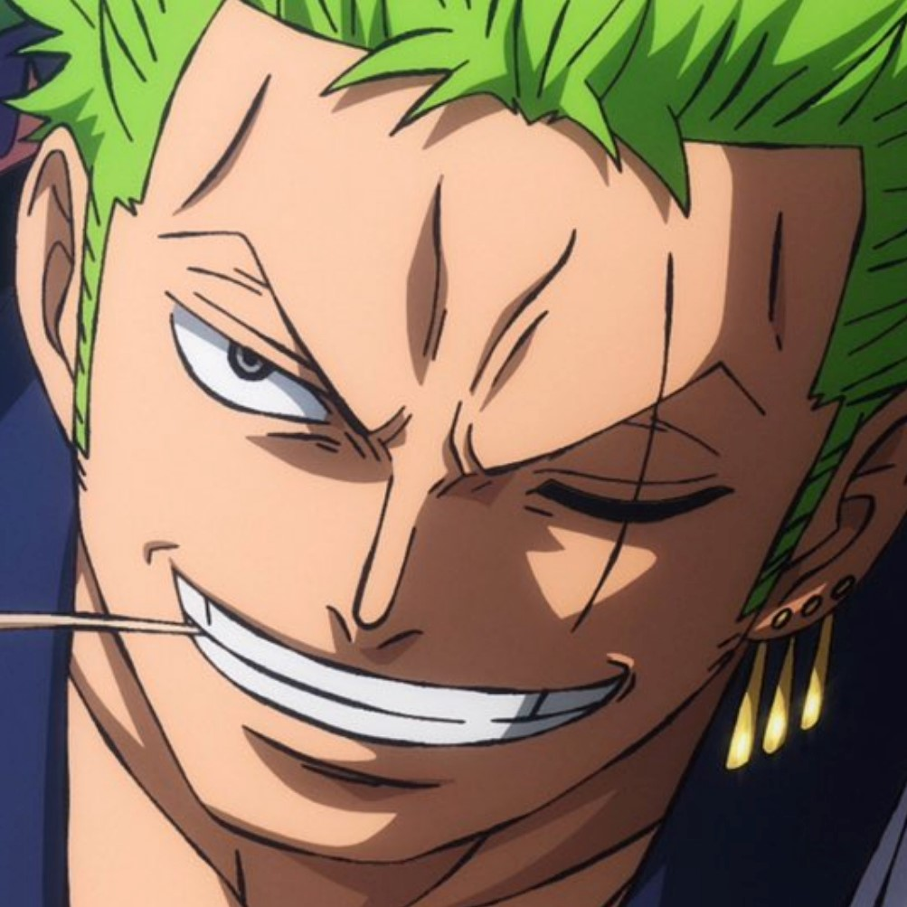
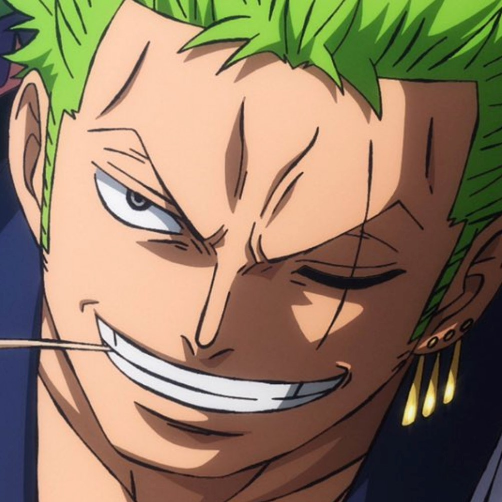
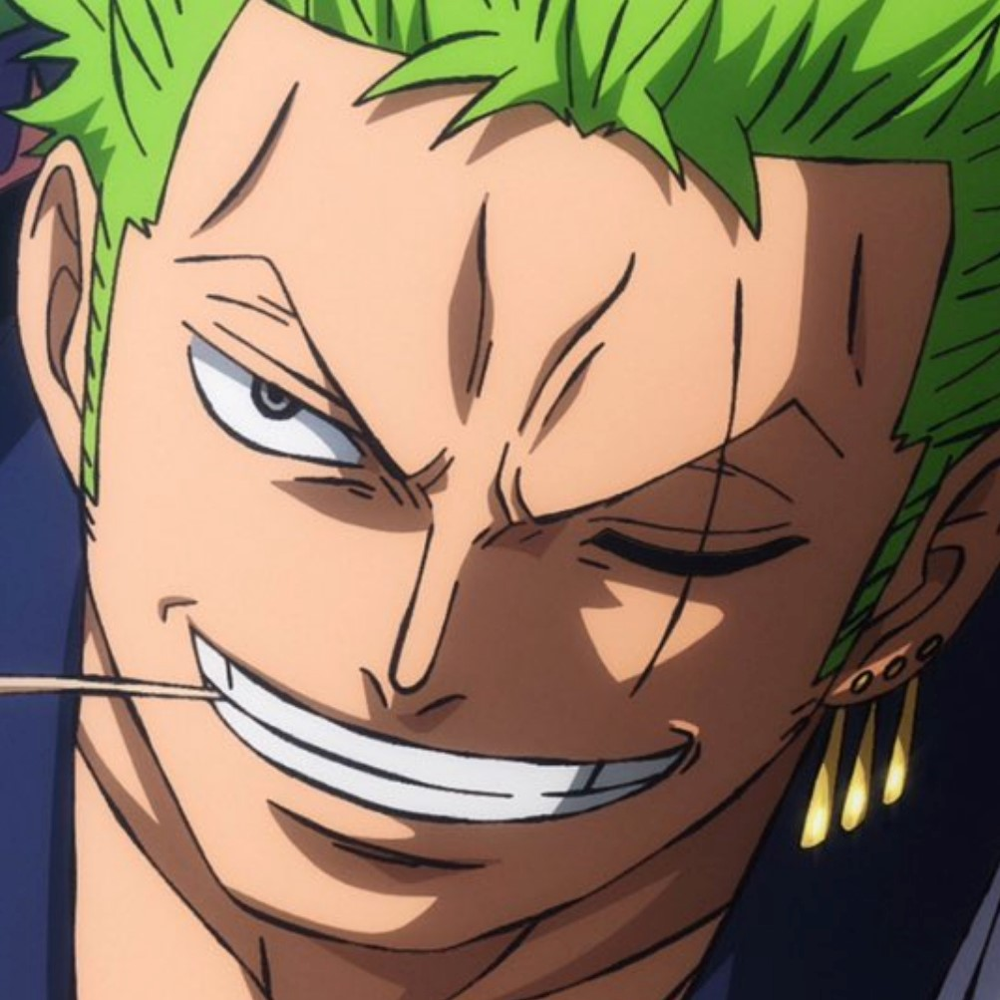
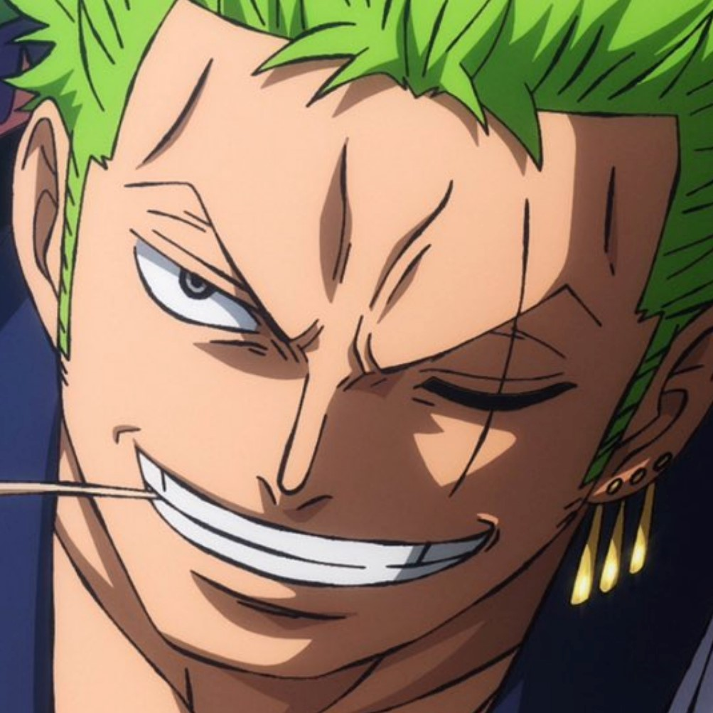

 

Roronoa Zoro, also known as "Pirate Hunter" Zoro, is the combatant of the Straw Hat Pirates. he is the second member of Luffy's crew and the first to join it.
Zoro is among the three most powerful combatants of the Straw Hats, alongside Luffy and Sanji.
His dream is to become the greatest swordsman in the world, in order to honor a promise he made to his deceased childhood friend Kuina.
In addition to his infamy as one of the Straw Hats and as a former bounty hunter, Zoro is also regarded as one of twelve pirates who are referred to as the "Worst Generation".
Immense Physical Strength - Zoro possesses immense physical strength and frequently spends his time at sea lifting incredibly large and heavy weights to keep growing stronger. Zoro's strength plays a large role in his abilities as a swordsman, as his strikes possess a great amount of power and range in their cutting ability.
Tremendous Speed and Agility - Although he is typically a strong, bruising fighter, Zoro has frequently demonstrated tremendous speed and agility to pursue opponents and avoid their attacks. He is considered one of the faster Straw Hats due to his physical power increasing his running abilit
Immense Level of Durability and Endurance - Zoro has an immense level of durability and endurance, having survived numerous serious injuries and oftentimes continuing to fight and move around while afflicted with them.
Roronoa Zoro has been a tremendously masterful swordsman since his youth. Since his goal is to obtain the title of Greatest Swordsman in the World, Zoro has devoted himself to this craft and is well-known across the world for his swordsmanship ability. Zoro usually wields three swords as part of his style known as "Three Sword Style",
Three Sword Style is Zoro's main style of swordfighting. Unusually for a human, he wields three swords at the same time, holding one in each hand as well as one in his mouth.Although Zoro usually wields three swords as part of his style known as "Three Sword Style", he has shown himself to be an exceptional duelist and combatant while wielding two swords or even just one.
Zoro is one of the very few people in the world who is capable of using all three forms of Haki.
Haoshoku Haki - Zoro can use Haoshoku Haki, a very rare form of Haki whose users are stated to have the qualities of a king. This power has laid dormant within Zoro and he was unaware he possesses it.
Busoshoku Haki - Busoshoku Haki is Zoro's main expertise concerning Haki, which has proven to be extremely proficient in, having mastered imbuement under Mihawk over the two-year timeskip, almost always using it in serious battles.
Kenbunshoku Haki - Zoro can also use Kenbunshoku Haki, as shown in multiple instances.